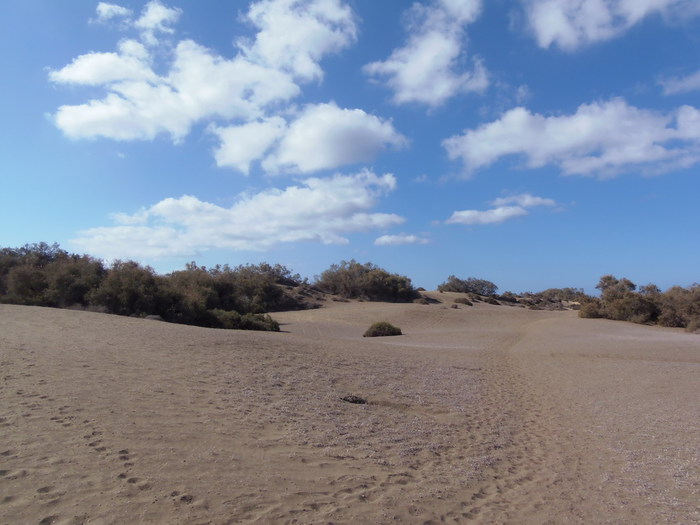

Maspalomas
Ruta interior
Sendero balizado con postes de madera con banda azul que iniciado en el Centro de Interpretación discurre primero, dirección NNO, recorre el campo de dunas fijas pasando junto a una de sus mayores cotas, el Alto de la Camella hasta llegar al limite norte de la Reserva, muralla de tuneras y otras especies introducidas que sirve de frontera con el Parque de Golf. Aquí gira a la izq. y continúa en paralelo a esta frontera, dirección OSO, hasta llegar a su final junto a la verja metálica que separa la Reserva de la Avda. Turoperador Neckermann y el cauce del barranco de Maspalomas.
Girando a la izquierda, dirección S, se llega al Acceso Oeste de la Reserva donde comienzan el Sendero 2 / Ruta Central y el itinerario al parque “Tony Gallardo”. Este último abandona la Reserva y por la Avda. Turoperador Neckermann que cruza el barranco y llega a la rotonda donde conecta con la Avda. Turoperador Tui por la que continúa; dirección N, hasta el edificio que da paso al parque
Tiempo estimado:30 minutos